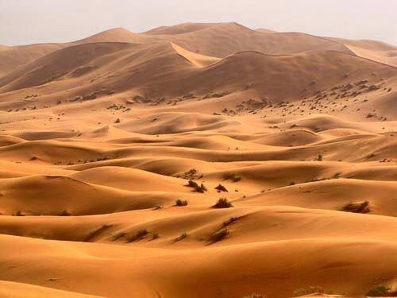
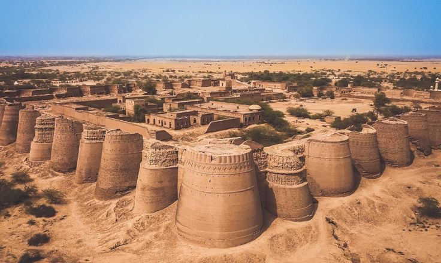
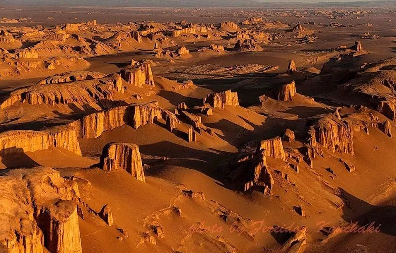

Discover Pakistan’s Majestic Deserts
Pakistan is home to several vast deserts, mostly located in the southern and southeastern regions of the country. These deserts are characterized by sandy dunes, arid climate, and unique ecosystems adapted to extreme heat and low rainfall. They play an important role in the country’s geography, culture, and wildlife.


